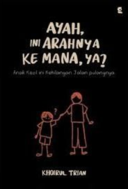
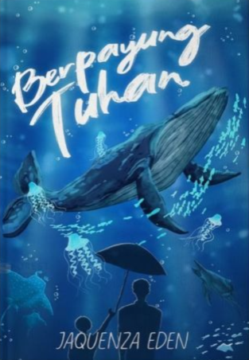
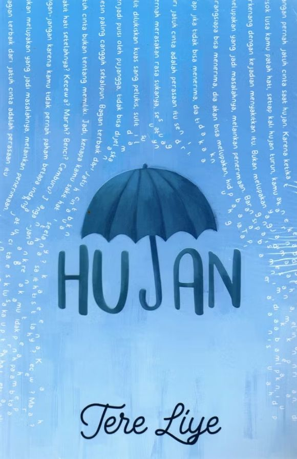

Penerbit : Kepustakaan Populer Gramedia (KPG)
Tahun : 2017
"Pengkhianat ada di mana-mana, bahkan di depan hidung kita, Laut. Kita tak pernah tahu dorongan setiap orang untuk berkhianat: bisa saja duit, kekuasaan, dendam, atau sekadar rasa takut dan tekanan penguasa. Kita harus belajar kecewa bahwa orang yang kita percaya ternyata memegang pisau dan menusuk punggung kita.”"

Penerbit : Grasindo (Grasindo/Gramedia Widiasarana Indonesia)
Tahun : 2025
"Tidak masalah jika langkahmu melambat dan tak secepat orang yang lain. Sekali-sekali, kita memang perlu menikmati apa yang sedang terjadi dan terus percaya bahwa pada akhirnya semua akan membaik."

Penerbit : Gradien Mediatama
Tahun : 2024
"Ayah, setelah dewasa aku bertemu banyak orang yang menyakitkan dalam hidup dan kali ini aku gak punya banyak keberanian untuk melawannya. Ayah, kadang aku kalah, kadang aku kuat, kadang semuanya terjadi begitu saja dengan penuh pura-pura yang aku coba kesampingkan rasa sakitnya."

Penerbit : Akad
Tahun: 2025
"Katanya, setelah seseorang meninggal dunia akan dihadapkan pada sebuah layar besar. Di mana akan ditampilkan setiap adegan dari pertama kali lahir ke dunia hingga akhirnya kembali kepada Sang Pencipta. Maka, disinilah Khalil berada. Di ruangan serba putih yang sepi, sunyi, dan hanya diisi oleh dirinya sendiri dengan sebuah televisi berukuran besar."

Penerbit : Gramedia Pustaka Utama
Tahun : 2016
"Jangan pernah jatuh cinta saat hujan. Karena ketika besok lusa kamu patah hati, setiap kali hujan turun, kamu akan terkenang dengan kejadian menyakitkan itu."